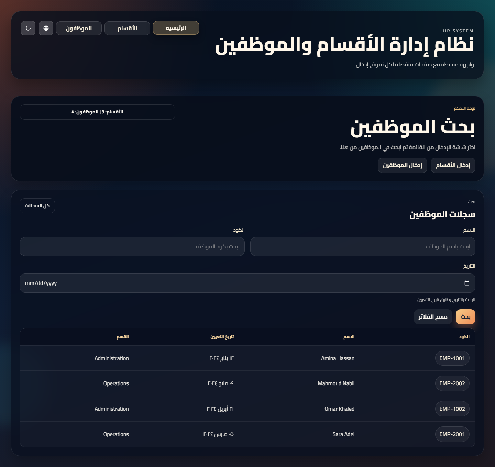
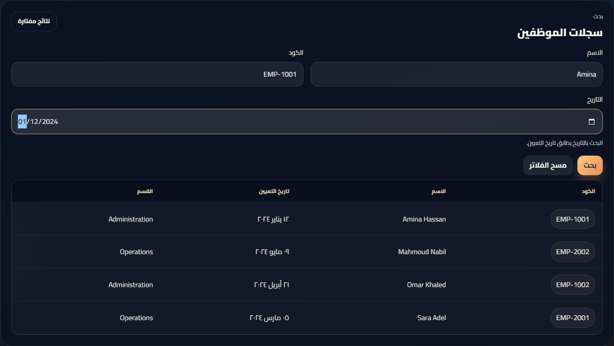
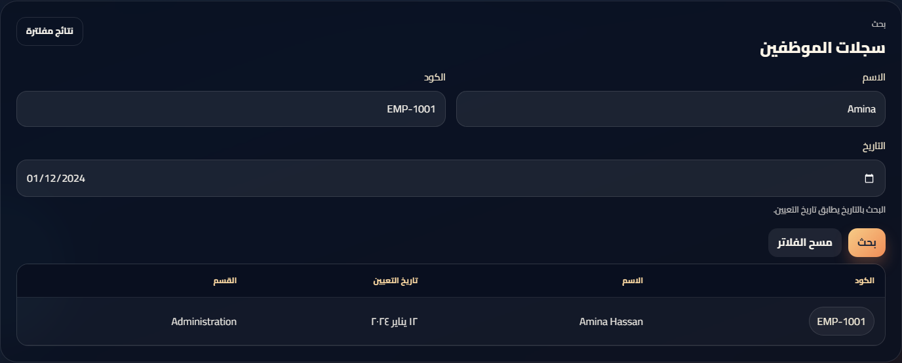
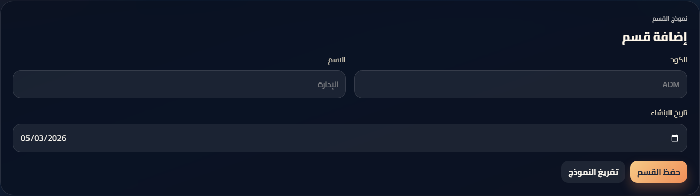
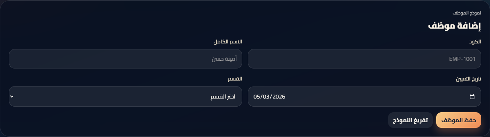
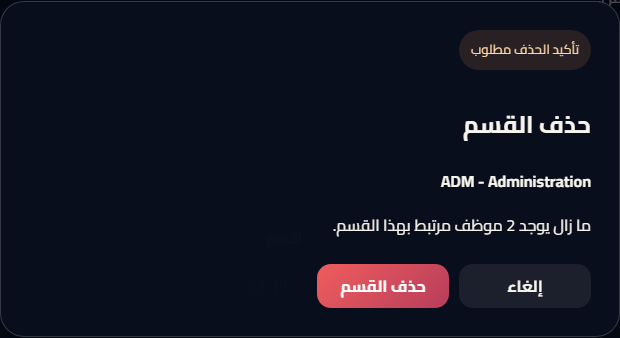
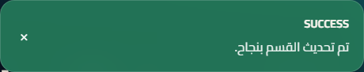
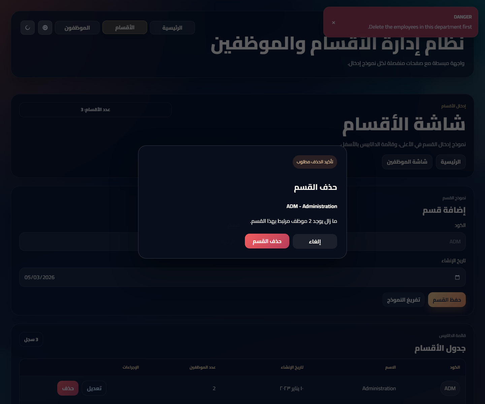

التقرير النهائي
نموذج تقرير مشروع HR System
صفحة عربية باتجاه RTL تلخص تعريف المشكلة والأهداف والتقنيات وتصميم قاعدة البيانات وأسماء الفريق، مع لقطات شاشة فعلية من النسخة الحية.
1. تعريف المشكلة
يقدم المشروع نموذجًا أوليًا لنظام إدارة بواجهة نظيفة وسهلة الاستخدام، مع إمكانية البحث والإدخال وتأكيد الحذف والتنبيهات للمستخدم.
2. الأهداف
- بناء واجهة واضحة ومناسبة لمبادئ HCI.
- استخدام .NET 10 وAngular وEF Core بنمط code-first.
- حفظ البيانات وإدارتها داخل طبقة قاعدة بيانات آمنة.
- عرض وظائف CRUD مع التصفية في البحث.
3. لغات البرمجة وبيئة التطوير
- C# مع ASP.NET Core Web API
- TypeScript مع Angular
- HTML وSCSS وتهيئة JSON
- Visual Studio Code
4. تصميم قاعدة البيانات
- جدول Department
- جدول Employee
- علاقة واحد إلى متعدد بين Department وEmployee
راجع مخطط قاعدة البيانات ERD للمزيد من التفاصيل.
5. لقطات الشاشة المطلوب تضمينها
الصور التالية مأخوذة من نسخة التشغيل الحية وتغطي المسار الكامل: البداية، البحث، النماذج، الحذف، والتنبيهات.

تعرض الهيرو، وبطاقات التوجيه، ولوحة بحث الموظفين بالتصميم الداكن النهائي.

يُظهر حقول الاسم والكود والتاريخ قبل تنفيذ الاستعلام.

يعرض جدولًا مفلترًا لنتيجة واحدة مطابقة للقيم المدخلة.

يوضح شاشة الأقسام مع النموذج والجدول الموجود أسفلها.

يعرض حقول الموظف واختيار القسم مع جدول السجلات أسفل الصفحة.

تظهر قبل تنفيذ الحذف وتعرض اسم القسم وملاحظته المرتبطة بالموظفين.

يوضح رسالة النجاح بعد تحديث بيانات القسم بنجاح.

يبين الخطأ الناتج عند محاولة حذف قسم ما زال مرتبطًا بموظفين.
6. أعضاء الفريق
- العضو 1: احمد حمدي كمال محمد - 202400647
- العضو 2: محمد سعد زكريا توفيق - 202400648
- العضو 3: محمد محمد عبد المنعم محمد - 202400722
- العضو 4: حمدان سعودى محمد امين - 202300625
- العضو 5: أحمد عصام امين السيد - 202400173
7. الخلاصة
يحقق النموذج الأولي المطلوب عبر دمج تصميم HCI مع النماذج المرتبطة بقاعدة البيانات والبحث وتأكيد الحذف والتنبيهات.
يمكن إضافة تحسينات مستقبلية مثل المصادقة، وترقيم الصفحات، والصلاحيات حسب الدور.